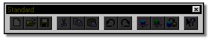
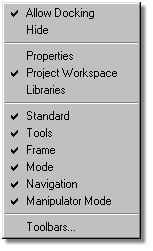

All of the different tools in Martin Hash’s 3-Dimensional Animation have
shortcut keys associated with them. The assigned shortcut key for a particular tool
can be viewed by holding the pointer over the button for that tool. Once you
are familiar with the shortcut keys for the tools, the toolbars can be hidden to
increase the amount of workspace available.
All of the different tools in Martin Hash’s 3-Dimensional Animation have
shortcut keys associated with them. The assigned shortcut key for a particular tool
can be viewed by holding the pointer over the button for that tool. Once you
are familiar with the shortcut keys for the tools, the toolbars can be hidden to
increase the amount of workspace available.
To select which toolbars are visible, right click on the border of any toolbar

and the following menu will appear:

All of the available toolbars are listed on this menu, with the visible items having a checkmark to the left of them. To toggle a toolbar on or off, simply point at it with the mouse and click.